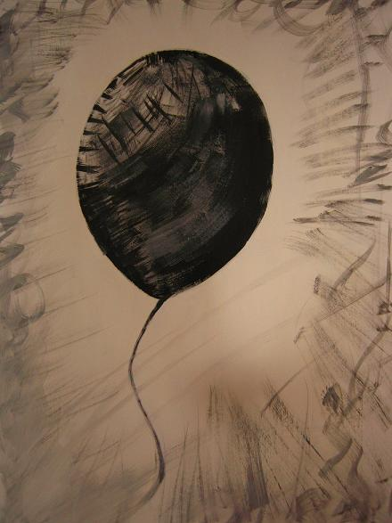

后天30号就要录制舞林大会复赛了,初赛跳的是恰恰,记得当时非常非常紧张,表现没有预计的好,结果还是拿了全场第一!哈,就是因为评委给我的这一点点肯定,坚定了我复赛要选择跳更难的SAMBA.我对自己也对所有人说这次不会紧张了,要好好享受舞台.
SAMBA好难啊555,不紧张是不可能的,之前的恰恰恰音乐为4/4拍，速度每分钟31小节左右。挑的音乐是节奏感强，舞态花俏，舞步利落紧凑,但那次跳的不满足,觉得还不够HIGH,所以我要求我的舞伴这次给我编得更HIGH更疯狂,真没想到看似简单的SAMBA原来这样难,
桑巴舞的音乐为4/4或2/4拍，速度居然是每分钟51小节左右。这次挑选的音乐非常热烈，结合HIPHOP的舞态编的很有动感很丰富，看老师跳觉得心里说不出的满足，真得很棒!可是自己一跳555,那个感觉,后天就要比赛了,到今天整套舞还没学完,SAMBA的感觉还没找到,不过我会拼了的！我决定走另外一条路,如果我只是几天时间去练别人学了几年的舞步那就等于自杀,其实应该将我的特点发挥出来并把放大,这样就会掩盖了我在舞蹈技术上的不足,我的特点是什么呢?我就不自卖自夸了,大家到时候看转播吧,祝我好运!
复赛还是会有六位选手和他们的舞伴一起,据我所知这次还会遇见可爱的小胖,小胖这次选择跳牛仔,一定会很有看头哦,还有主动要求和我PK的好男儿向鼎,其实我们是好朋友,大家都很熟,这样玩起来会很开心,不太容易紧张,哈哈...至于其他还有谁我也不清楚...
最近没拍什么照片,想传的又不准传...
其实我想画个气球,但是不是更像蝌蚪啊...
